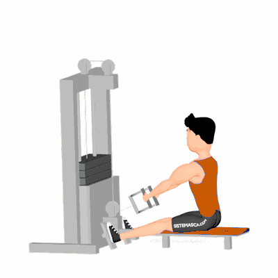

Retração Escapular na Remada Baixa

Exercício de musculação focado na retração escapular para fortalecimento dos romboides e trapézio, melhorando controle escapular e postura. Indicado para praticantes de todos os níveis.
Ficha Técnica
Tipo: Musculação
Grupo Muscular: Costas
Aparelho: Nenhum
Músculos: Nenhum
Como realizar
- Sente-se na máquina de remada, pés apoiados e tronco ereto;
- Segure a alça com pegada neutra ou pronada, braços estendidos;
- Inspire e puxe a alça em direção ao peito iniciando o movimento pela retração das escápulas;
- Mantenha escápulas retraídas e contraia romboides e trapézio no final do movimento;
- Expire e retorne de forma controlada à posição inicial;
- Repita conforme prescrição.
 RC STORE
RC STORE